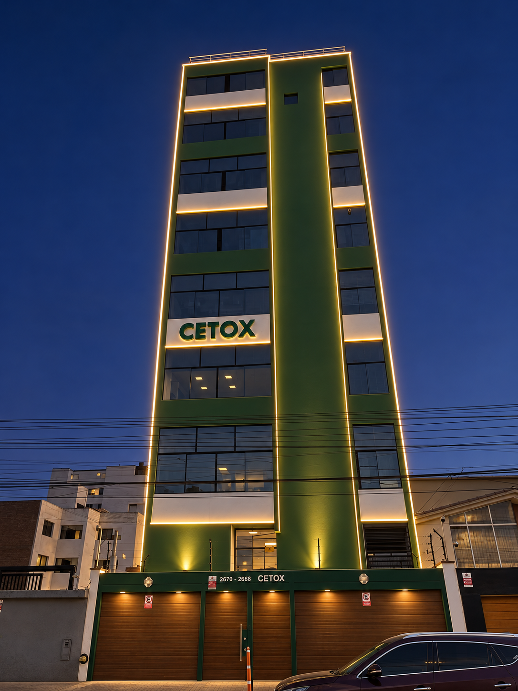

CENTRO TOXICOLÓGICO · DICIEMBRE
Una fachada.
Cuatro formas de encenderla.
Una propuesta sobria, una cortina de destellos, una fachada dinámica o un gran gesto navideño. Explora cada alternativa sobre tu edificio.

01 / DELINEADO ARQUITECTÓNICOLuz continua
Fotomontaje conceptual sobre la fachada real.
Descargar render ↗
LECTURA EN CONJUNTO
Cuatro instalaciones.
Cuatro personalidades.
Compara la distribución y el carácter de la luz con el mismo punto de vista.
EL SIGUIENTE PASO
Elegir el carácter.
Definir cada detalle.
La alternativa elegida puede ajustarse en color, densidad y ritmo. La distribución final, los anclajes y el metraje se definirán con las medidas y la revisión técnica del edificio.
Volver a explorar ↑